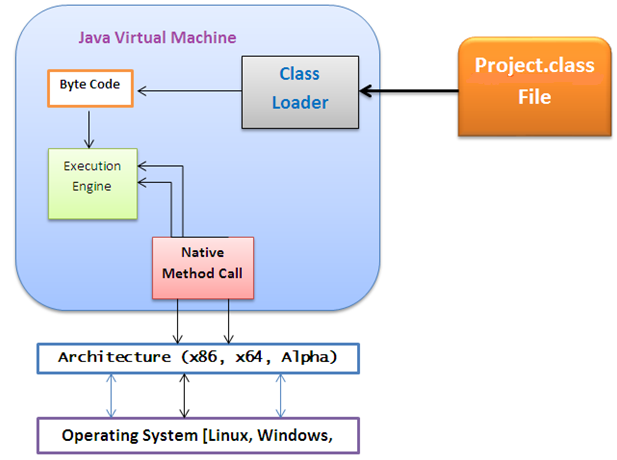

2016上半年花点时间深入了解JVM，读《《深入理解Java虚拟机 JVM高级特性与最佳实践》，整理遇到过的内存泄漏，性能优化问题
第一章 走近Java
Java技术体系

- Java程序设计语言、Java虚拟机、Java API类库三部分统称为JDK(Java Development Kit) ,JDK是Java程序开发的最小环境
- Java API类库中的Java SE API子集和Java虚拟机两部分统称为JRE(Java Runtime Environment)，JRE是支持Java程序运行的标准环境
- 按照Java技术关注的重点业务领域来划分，Java技术体系可分为4个平台
- Java Card：支持Applets(Java小程序)运行在小内存设备（如智能卡）上的平台；
- Java ME(Micro Edition)：支持Java运行在移动终端上的平台；（今有Android SDK）
- Java SE(Standard Edition)：支持面向桌面级应用的Java平台；
- Java EE(Enterprise Edition)：支持使用多层架构的企业级应用(如ERP、CRM应用)的Java平台；
Java发展史
Java虚拟机发展史
- Sun Classic/Extract VM
- Sun HotSpot VM
- Sun Mobile-Embedded VM/Meta-Circular VM
- Bea Jrockit/IDM J9 VM
- Azul VM/BEA Liquid VM
- Apache Harmony/Google Android Dalvik VM
- Microsoft JVM…
Java技术的未来展望
- 模块化（Jigsaw）
- 混合语言：多语言混合编程，通过特定领域发语言去解决特定领域的问题
- 多核并行（concurrent.forkjoin；Lambada；函数式编程）
- 丰富语法（Coin子项目）
- 64位虚拟机（计算机终究完全过渡到64位的时代）
JDK编译实战
OpenJDK7下载
Building the source code for the OpenJDK requires a certain degree of technical expertise.
第二章 Java内存区域与内存溢出异常
运行时的数据区域

程序计数器
- 程序计数器（Program Counter Register）是一块比较小的内存空间，它可以看作是当前线程所执行的字节码的行号指示器；
- PCR为线程私有内存；
- 是唯一一个在Java虚拟机规范中没有规定任何OOM情况的区域；
Java虚拟机栈

- Java虚拟机栈（Java Virtual Machine Stacks）描述的是Java方法执行的内存模型：每个方法在在执行的同时都会创建一个栈帧（Stack Frame）用于存储 局部变量表、操作数栈、动态链接、方法接口 等信息。每个方法从调用直至执行完成的过程，就对应着一个栈帧在虚拟机栈中入栈出栈的过程。
- Java虚拟机栈也是线程私有，它的生命周期与线程相同。
- Java内存区常分为 堆内存（Heap）和栈内存（Stack）；
- OOM情况：（1）线程请求的栈深度>虚拟机所运行的最大深度；（2）虚拟机动态扩展时无法申请到足够的内存
本地方法栈

本地方法栈（Native Method Stack）与虚拟机所发挥的作用非常相似的，他们之间的区别不过是虚拟机栈为虚拟机执行Java方法（也就是字节码）服务，而本地方法栈则为虚拟机所使用的Native方法服务。
- HotSpot虚拟机把本地方法栈和虚拟机栈合二为一；
- 此区域会抛StackOverflowError 和 OutofMemoryError异常
Java堆

Java堆（Java Heap）是Java虚拟机所管理的内存中最大的一块，Java Heap是所有线程共享的一块内存区域，在VM启动时创建。
- 所有的对象实例以及数组都要在堆上分配（不绝对：栈上分配、标量替换优化技术）；
- Java堆是垃圾收集器管理的主要区域，也可称做GC堆（Garbage Collected Heap）
- 从内存回收的角度，现代收集器基本都采用分代收集算法，Java Heap可细分为新生代和老年代，再细致可氛围Eden空间、From Survivor空间、To Survivor空间等–>更好回收内存。
- 从内存分配的角度，线程共享的Java堆中可能分出多个线程私有的分配缓存区（TLAB：Thread Local Allocation Buffer）–>更快分配内存。
- Java堆出于逻辑连续的内存空间中，物理上可不连续，如磁盘空间一样；
- Java堆在实现上可时，可以实现成固定大小的，也可以按照可扩展实现（-Xmx和-Xms控制）；
- OOM情况：堆中没有内存完成实例分配，堆也无法再扩展时
方法区
方法区（Method Area）与Java堆一样，是各个线程共享的内存区域，它用于存储已被虚拟机加载的类信息、常量、静态变量、即时编译器编译后的代码等数据。
- 也称为永久代（Permanent Generation）但随着Java8的到来，已放弃永久代改为采用Native Memory来实现方法区的规划。
- 此区域回收目标主要是针对常量池的回收和对类型的卸载。
运行时常量池

运行时常量池（Runtime Constants Pool）是方法区的一部分
- Class文件中除了有类的版本、字段、方法、接口等描述的信息外，还有一项信息是常量池（Constant Pool Table）,用于存放编译期生成的各种字面量和符号引用，这部分内容将在类加载后进入方法区的运行时常量池中存放。
直接内存
直接内存（Direct Memory）并不是虚拟机运行时数据区的一部分，也不是虚拟机规范中定义的内存区域。
- 能在一些场景中显著提高性能，因为避免了在Java堆和Native堆中来回复制数据。
- 直接内存的分配不会受到Java堆大小的限制，但会收到本机总内存（RAM以及SWAP/分页文件）大小以及处理器寻址空间的限制。
- 设置Xmx等参数信息时注意不能忽略直接内存，不然会引起OOM。